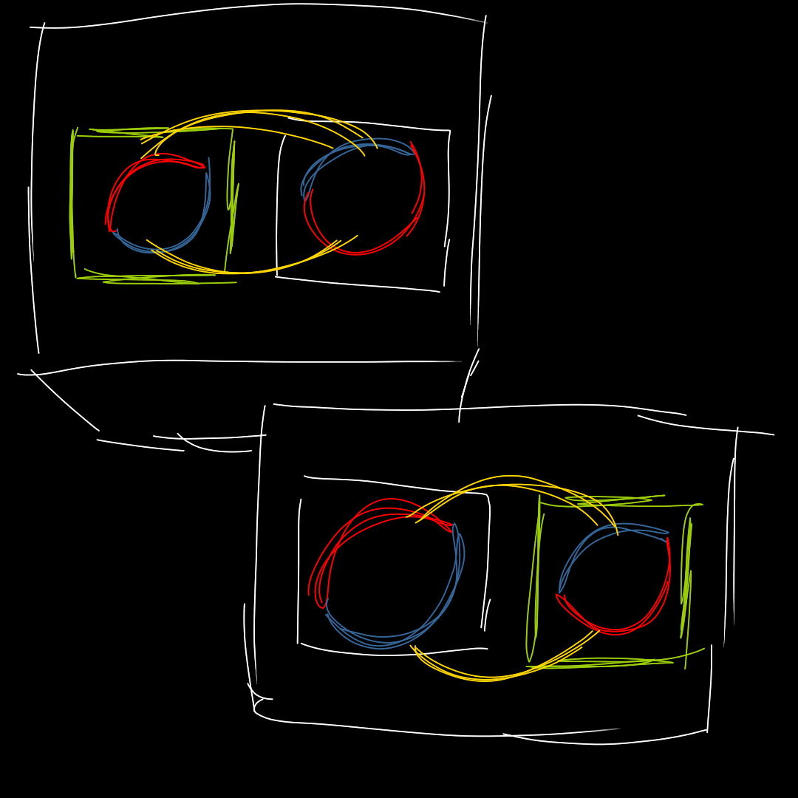
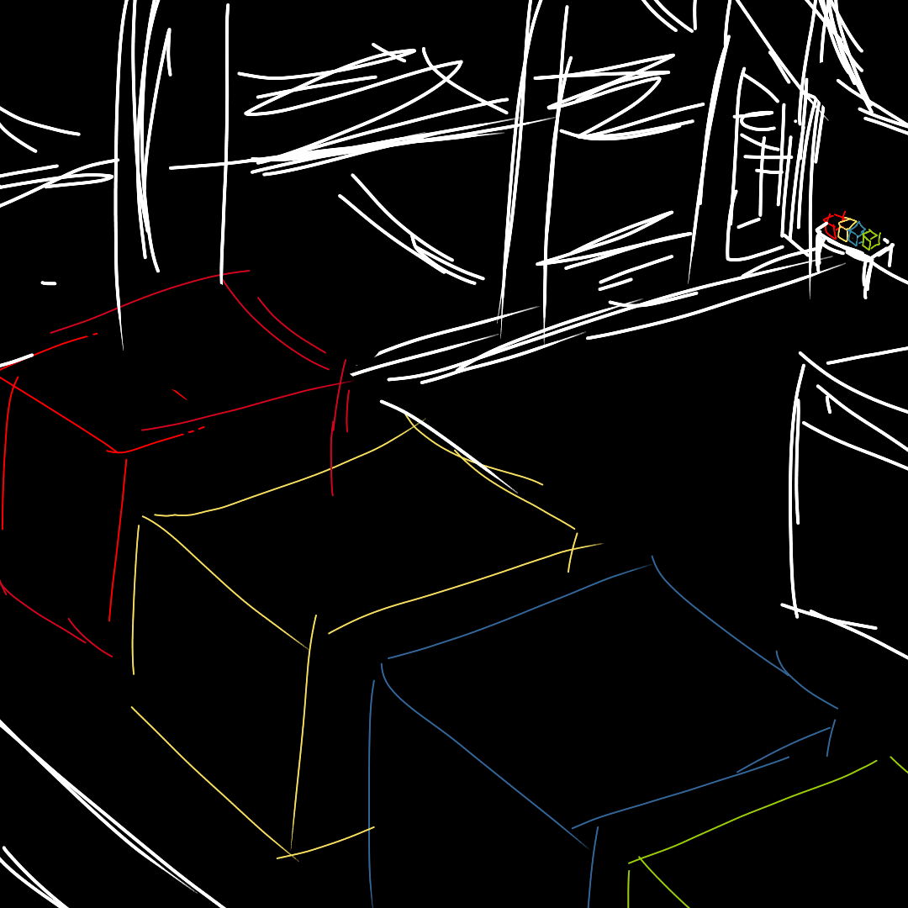

"Of course, this isn't the only kind of entanglement. As long as the states of quantum objects are somehow connected, there is entanglement." Max configures the machine and creates more pairs of packages. Their labels look a bit different.
|
◯
?
|
You open the packages. This time, each pair of package contains exactly one red ball and one blue ball.
"We can also do entanglements with other superposition states, like balls with different sizes, or different locations, but I want to show you something more interesting."
He creates four pairs of entangled packages, with the same entanglement as before (one red and one blue). He labelled each pair as red, yellow, blue and green. After that, he separates the pairs of package. From each pair of packages, he places one box on one side of the room, and another one to another side.
You head to one side of the room and inspect the boxes.
| ◯ ? |
After that, you head to the other side of the room and open the boxes.
| ◯ ? |
"As you can see, the boxes are still entangled," Stephen says. "Furthermore, when you open one of the boxes, the other box's state is also determined immediately, regardless of their distance. This is true even if the boxes are lightyears apart!"
"Why does this happens? We don't know. Einstein calls this 'SPOOKY action at a distance', but I call this 'Awesome'." Stephen continues.
You noted this down in your memo.